Asian Cuisine
Asian cuisine includes several major regions, where many cultures have their own unique characteristic cuisine. Of the many different cuisines that come from the continent, a few of the main cuisines are - Japanese, Indian and Vietnamese.
Japanese
Yakiniku Great
Location:255 Queen's Road Central, Sheung Wan, Hong Kong
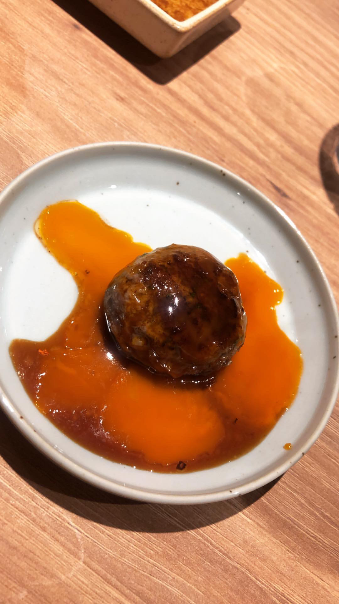 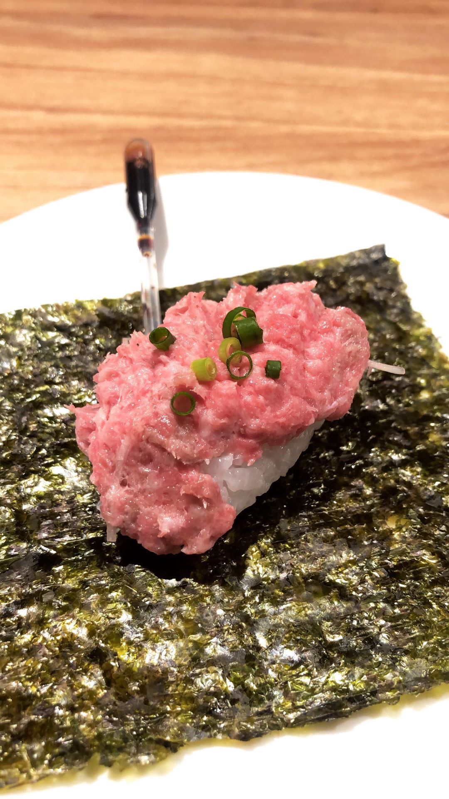 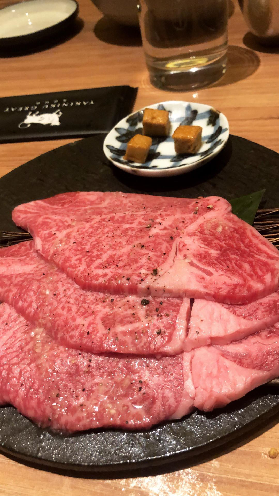 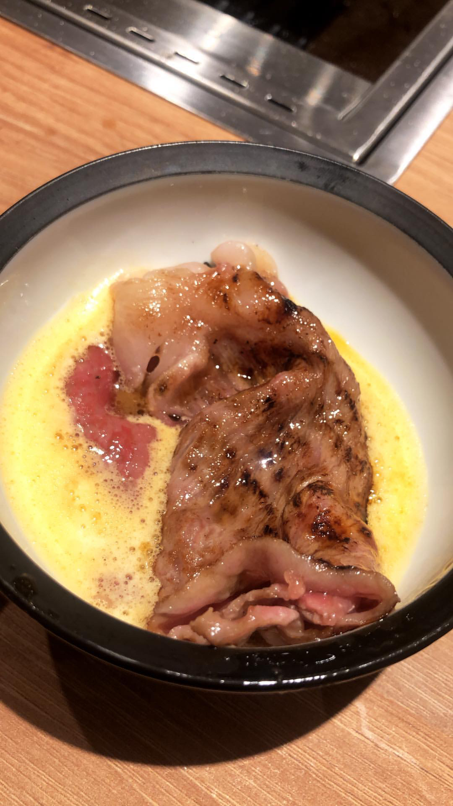
"Yakiniku" stands for grilled meat in Japanese and this is exactly what this restaurant does best. With grills in the center of each table, Yakiniku Great's focus is on its meats. They offer different cuts of the cow, cooked at specific times and paired with different sauces for each cut. It is clear how much effort and thought is put into each slice of meat served at Yakiniku Great, and the servers can either cook them for you or you can do it yourself, which in my opinion is a lot more fun! The wagyu is so soft that it melts in your mouth the second you eat it.
Porker
Location: B/F, 55 Wellington St, Central, Hong Kong (Entrance on Pottinger St)
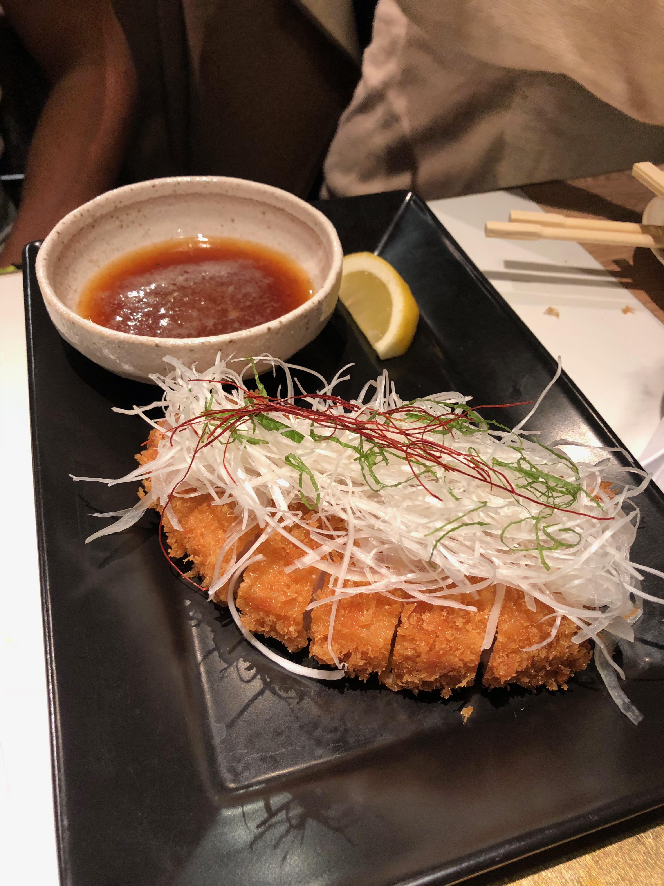 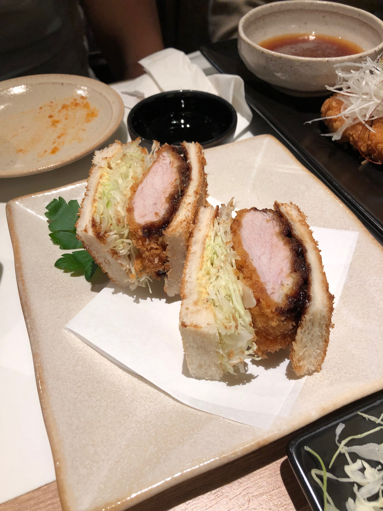 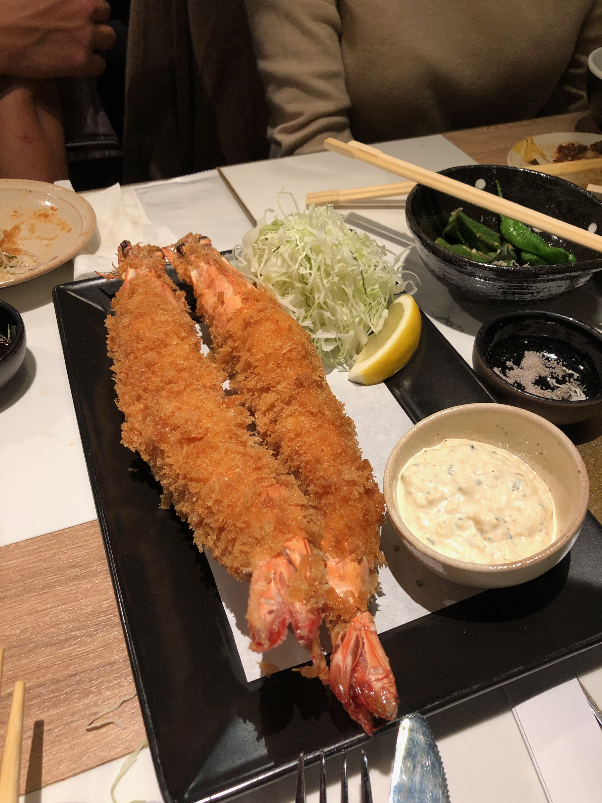
One of my favorite Japanese dishes is "tonkatsu" which is a breaded, deep-fried/tempura pork cutlet. Here at Porker, their entire menu focuses on just that. They are a specialty Japanese cutlet restaurant, serving different types of meats and seafood made tonkatsu style.
Zuma
Location: Landmark Level 5 & 6, 15 Queen's Road, Central, Hong Kong
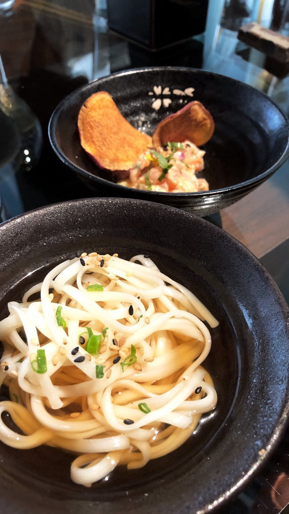 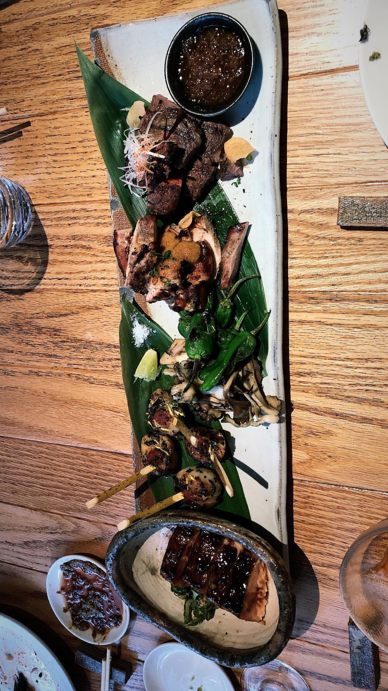
Located in the central business district of Hong Kong and at one of the most prestigious addresses in Central,
Zuma Hong Kong is an internationally well known contemporary Japanese Izakaya restaurant with locations in New York,
Boston, Miami, London, Dubai, just to name a few.
With their very own garden terrace, private room and a lounge and bar, Zuma's relaxing atmopshere elevates the dining experience.
My recommendation is to go on the weekend when they have a brunch special with a sushi/sashimi and hot foods buffet, free flow
of champagne (additional charge), one entree and their famous dessert platter.
Indian
Bombay Dreams
Location: 4/F, Carfield Building, 77 Wyndham Street, Hong Kong
Images of bombay dreams
Located in the busy party district of Hong Kong, Bombay Dreams offers classic Indian dishes with a contemporary twist to it. Their portions are large and meant for sharing with friends and families. They also offer classic cocktails that incorporate Indian spices and serve, in my opinion, one of the best garlic naan I've tried.
Vietnamese
Brass Spoon
Location: G/F, 10 Pottinger Street, Central, Hong Kong
Shop B, G/F, 1-3 Moon Street, Wan Chai, Hong Kong
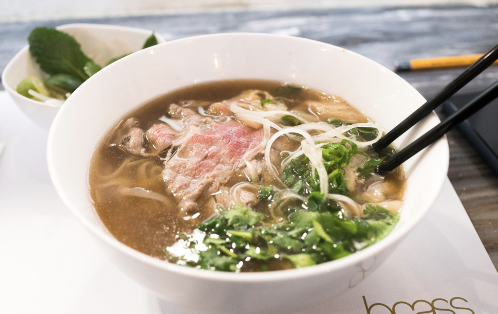 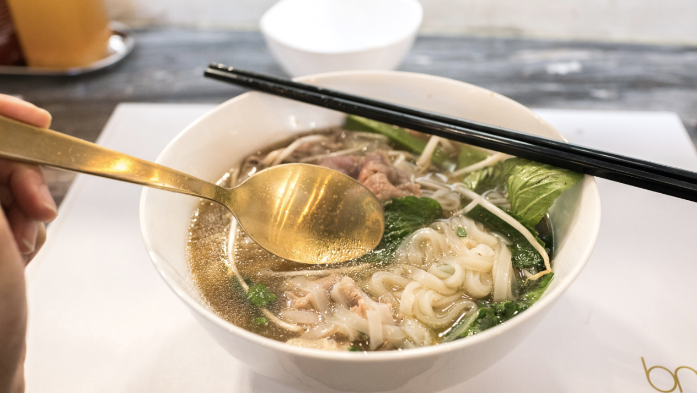
One of the more popular Vietnamese Pho restaurants in Hong Kong is Brass Spoon, which has earned the Michelin's Bib Gourmand status, given to restaurants who have "exceptionally good food at moderate prices". Although compared to a lot of the other chain Pho restaurants in Hong Kong, Brass Spoon is considered a little on the pricer side, they pride themselves in offering premium ingredients like "preimum raw beef". One must fill in and tick a little sheet of paper to customize the ingredients and toppings added into your pho. I love the fact that you are allowed to add more or take away certain ingredients as you please when you order the noodles and their use of quality ingredients.